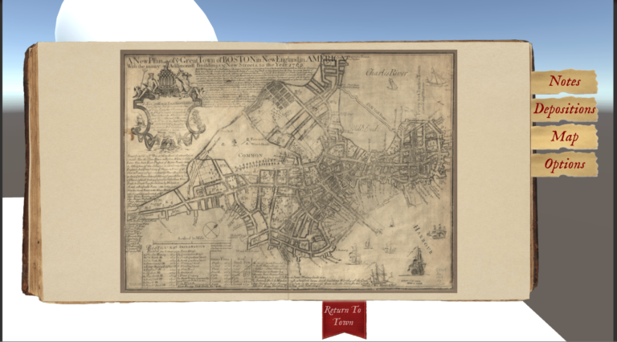
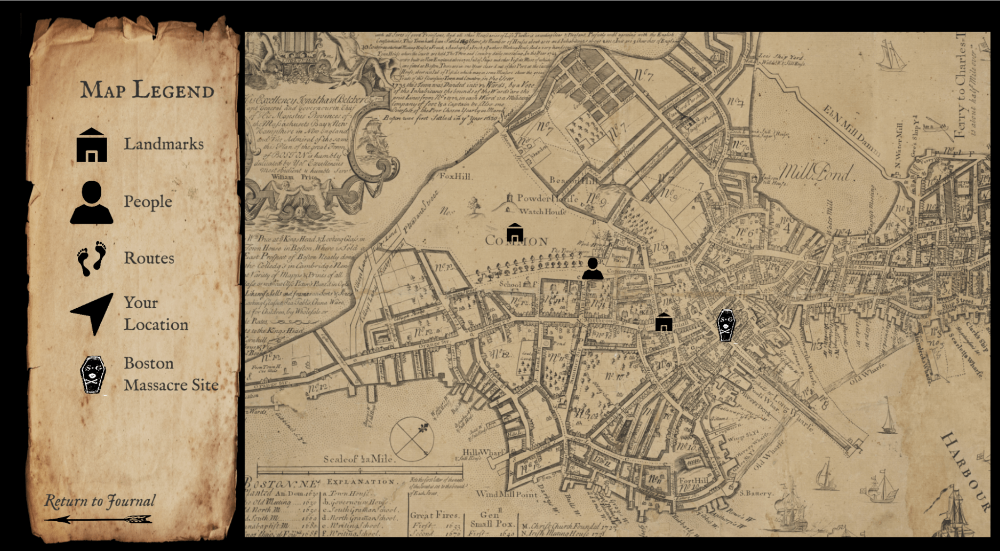

Witness to the Revolution
The Boston Massacre in 3D: Mapping, Modeling and Serious Gaming
Witness to the Revolution
is an educational computer game built in
Unity
designed to teach the public about the events of the Boston Massacre. The game is a collaboration
between Professor Austin Mason and Professor Serena Zabin at Carleton College, and
will be installed at the Old State House in Boston upon completion as an introduction
to the museum. Players of the game must piece together testimonies of the Boston Massacre
in preparation for the soldiers’ trial as they decide whether to support the prosection or the defense.
In Fall 2019, I enrolled in a course at Carleton College called
The Boston Massacre in 3D: Mapping, Modeling and Serious Gaming
where students helped build the digital infrastructure for the game. I worked on creating the user interface
of the player’s map that he or she would use to navigate the streets of Boston. This involved designing the
appearance of the map, including the typography, icons, and display, as well as implementing the design in Unity.
Goal
Create an interactive and functional map that the player can use to navigate the city of Boston
Timeline
September to December 2019
Skills
- User experience design
- Prototyping
- Graphic design
Tools
- Unity
- Photoshop
Process
At the beginning of the project, the player's map consisted of a static image. The player could not
zoom or pan and there were no recognizable features to help the player orient themselves.

We began the process of creating the map by conducting a competitive analysis of maps from other video games.
This increased our understanding of the advantages and disadvantages of different styles of player maps and
helped us determine which design would work best for our needs. Then, we created a medium-fidelity
prototype of the map in Photoshop to identify potential icons and fonts.
Using our prototype as a blueprint, we then transferred this vision to Unity where we added functionality
and interactions. I wrote scripts in C# to animate icons, add pan/zoom, allow the user to toggle features on and off,
and connect the map to other Unity scenes.
Outcome
By the conclusion of the project, we had an interactive prototype of the map that players could use. You can read my reflection on this work here
